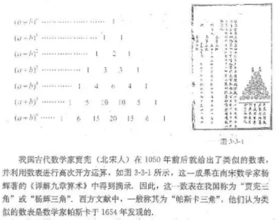

第三章 排列、组合与二项式定理
注: 如非特殊说明, 以下图片都来自高中数学考点题解公众号
3.1 排列与组合
3.1.1 基本计数原理
3.1.2排列与排列数
3.1.3 组合与组合数
1. 组合与组合数
一般地, 从n个不同对象中取出m (m≤n)个对象并成一组, 称为从n个不同对象中取出m个对象的一个组合.
从n个不同对象中取出m个对象的所有组合的个数, 称为从n个不同对象中取出m个对象的组合数, 用符号 $C_n^m$ 表示(Combination).
考虑到从n个不同对象中取出m个做排列, 可以分成两个步骤完成:
第一步, 从n个不同对象中取出m个, 有 $C_n^m$ 种选法;
第二步,将选出的m个对象做全排列, 有 $A_m^m$ 种排法.
由分步乘法计数原理有 $A_n^m = C_n^m x A_m^m$, 所以
$C_n^m$
= ${A_n^m \over A_m^m}$
= ${n(n-1)...[n-(m-1)] \over m(m-1) x ... x 2 x 1}$
= $n! \over (n-m) m!$
2. 组合数的性质
未完待续...
3. 组合数的应用
未完待续...
4. 用计算机计算组合数
未完待续...
3.2 数学探究活动:生日悖论的解释与模拟
3.3 二项式定理与杨辉三角
更多资料可参考: 牛顿二项式_百度百科.html
1.二项式定理
二项式是只有两项的多项式，即两个单项式的和。是仅次于单项式的最简单多项式。
$(a + b)^n = C_n^0 a^n + C_n^1 a^{n-1} b + ... + C_n^k a^{n-k} b^k + C_n^n b^n$ (n是整数, 0≤k≤n)
等式右边的式子称为 $(a+b)^2$ 的展开式, 它共有 n+1 项,
其中 $C_n^k a^{n-k} b^k$ 是展开式中的第 k+1 项(通常用 $T_{k+1}$ 表示),
$C_n^k$ 称为第 k+1 项的二项式系数,
我们将 $T_{k+1} = C_n^k a^{n-k} b^k$ 称为二项展开式的通项公式.
2.二项式系数的性质
$C_n^1 + C_n^2 + ... + C_n^{n-1} + C_n^n = 2^n$
3.杨辉三角

4.二项式定理的应用
例1: 求证 $99^{98}$ - 1 能被100整除.
∵ $99^{98} = (100 - 1)^{98}$
= $C_{98}^0 100^{98} + C_{98}^1 100^{97}(-1) + C_{98}^2 100^{96}(-1)^2 + ... + C_{98}^{97} 100^1(-1)^{97} + C_{98}^{98} 100^0(-1)^{98}$
注意到上述右边的展开式中, 前面98项都是100的倍数, 最后一项为1, 由此可知 $99^{98}$ - 1 能被100整除.